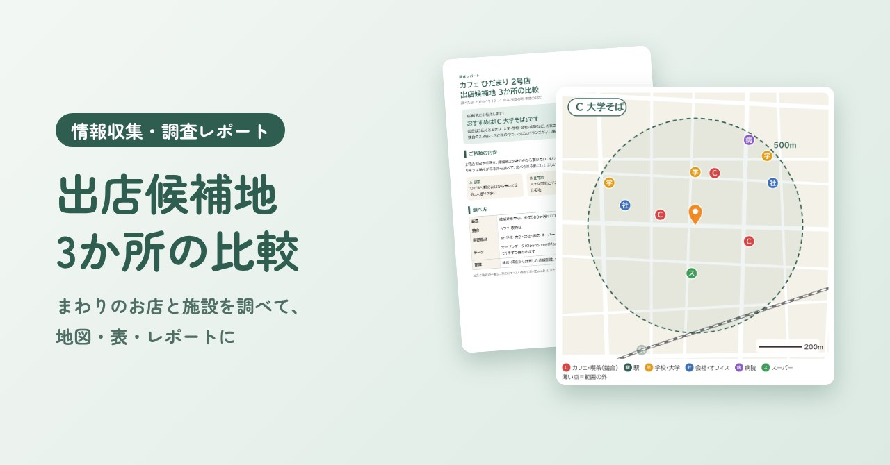
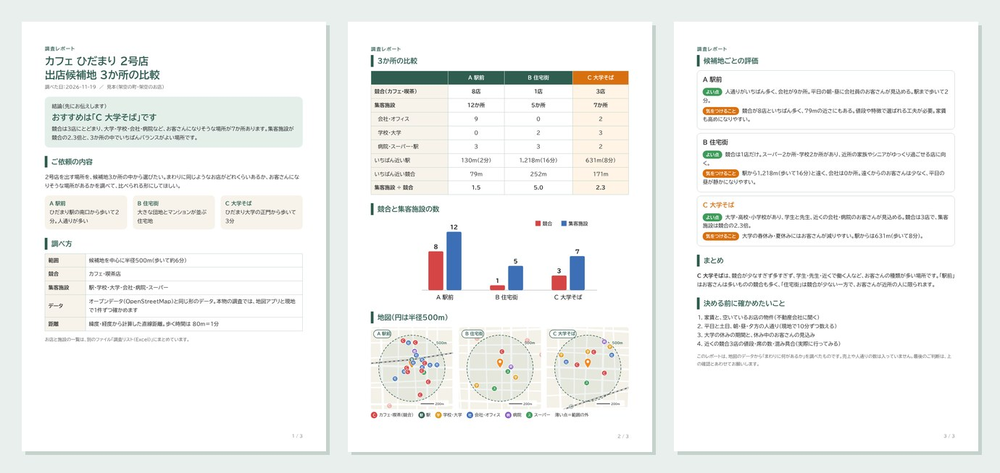
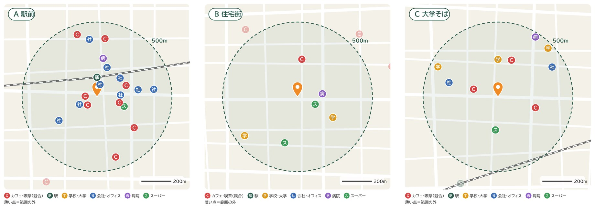
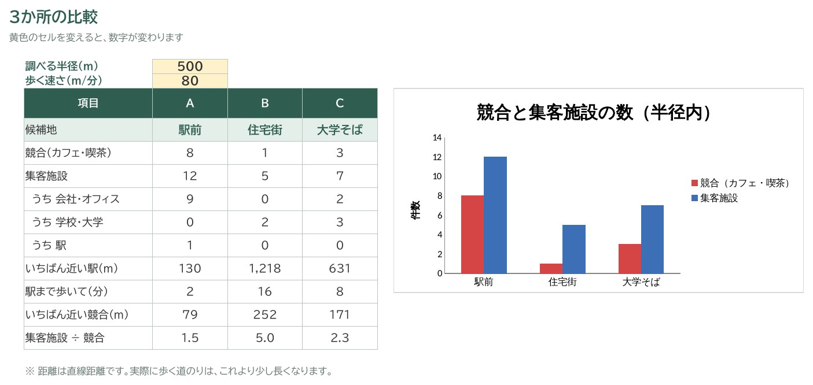
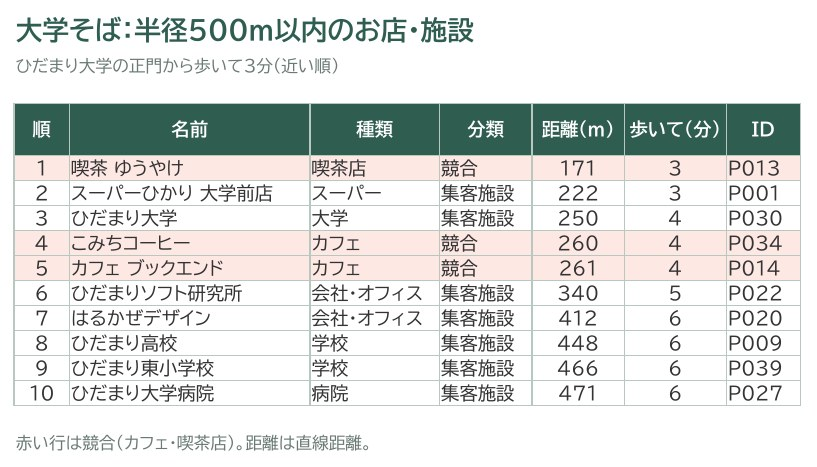
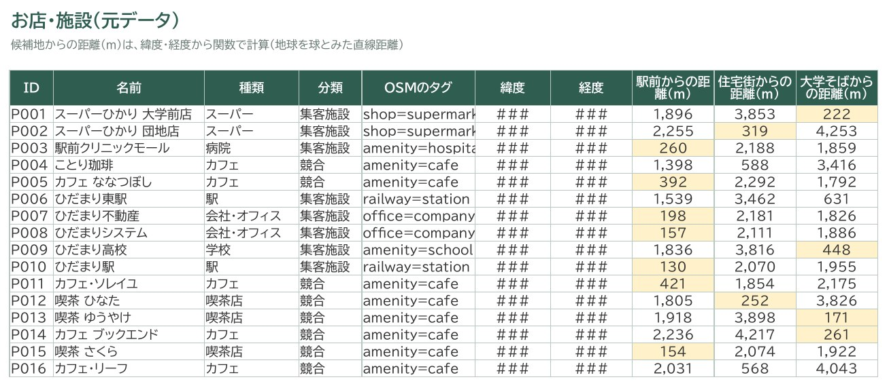

← 制作実績一覧へ戻る
見本ファイルつき
出店候補地の調査（お店・施設リストと比較レポート）
カフェの2号店を出す場所を、候補地3か所から選ぶための調査です。まわりにある競合のお店と、駅・学校・会社などお客さんになりそうな場所を調べ、Excelの一覧・地図・A4 3枚の比較レポートにまとめました。数字を並べるだけでなく、おすすめの場所と理由、決める前に確かめたいことまで書いています。

想定した依頼
「2号店のカフェを出したい。候補地が3か所あるので、まわりに同じようなお店がどれくらいあるか、駅・学校・会社などお客さんになりそうな場所があるかを調べて、比べられる資料にしてほしい」。飲食店・教室・サロンの出店や、営業先のリスト作りのご相談を想定して作りました。
作ったもの
架空の町に出店する「カフェ ひだまり」2号店の調査です。候補地は「駅前」「住宅街」「大学そば」の3か所です。
- 比較レポート（A4 3ページ）：最初に結論、次に3か所の比較表・グラフ・地図、最後に候補地ごとのよい点と気をつけること
- 調査リスト（Excel）：候補地ごとに、半径500m以内のお店・施設を近い順に並べた一覧（歩いて何分つき）
- 地図：候補地を中心に半径500mの円をかき、お店・施設を色分けした点で表示


調査リスト（Excel）
レポートの数字は、すべてこのExcelから出しています。元データに名前と緯度・経度を入れると、候補地からの距離と比較の数字が関数で計算されます。



工夫した点
- 結論を先に：レポートの1ページ目に「おすすめは大学そば」と理由を書き、忙しい依頼主が1枚目だけ読んでもわかるようにしました。
- よい点と気をつけることを両方：おすすめの場所にも「大学の休みはお客さんが減りやすい」などの注意を書き、最後の判断がしやすいようにしました。
- 調べ方を書く：範囲・データ・距離の計算のしかたをのせ、依頼主が自分で確かめられるようにしました。わからないこと（家賃・人通りの数）もはっきり書いています。
- 正しさを確かめた：Excelの関数で出した件数・距離を、別に計算した答えと21か所すべて照らし合わせ、一致することを確かめました。
規模と制作時間
- 候補地3か所、お店・施設47件、Excelのシート8枚、レポートA4 3ページ、地図3枚
- 制作：データの整理・地図・レポートの作成と確認まで 約1時間（AIと一緒に作成）
こんなご依頼にも対応できます
- 出店や教室を開く場所の候補を、まわりのお店や施設で比べたい
- 営業先・取引先になりそうなお店や会社を、地域ごとのリストにしたい
- 調べた結果を、上司やお客さんに見せられるレポートにまとめたい
注意
町・お店・施設の名前と位置は、すべて架空の見本です。本物の調査では、OpenStreetMapなどのオープンデータから集め、地図アプリや現地で1件ずつ確かめます。距離は直線距離で、売上や人通りの数は含みません。